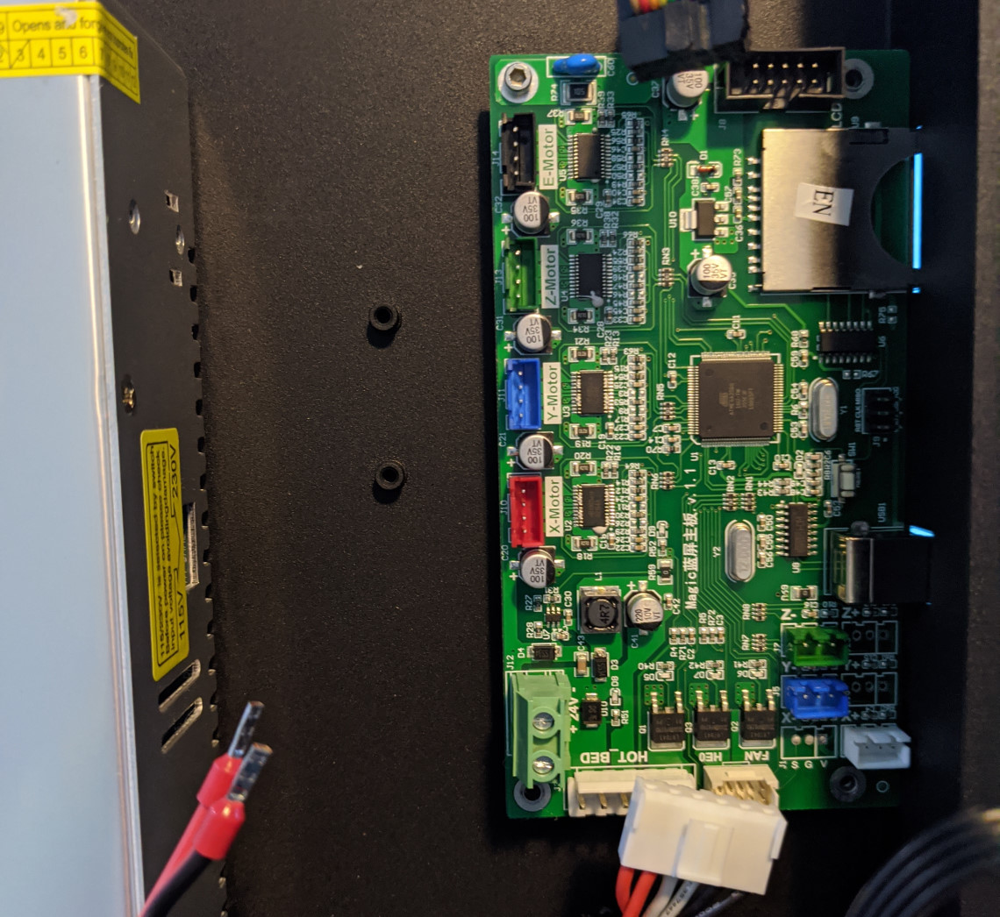
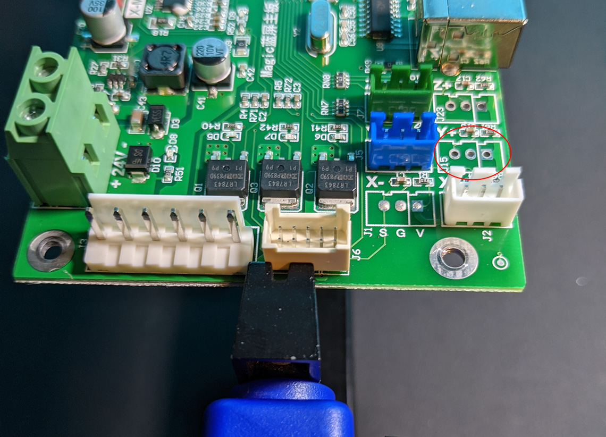
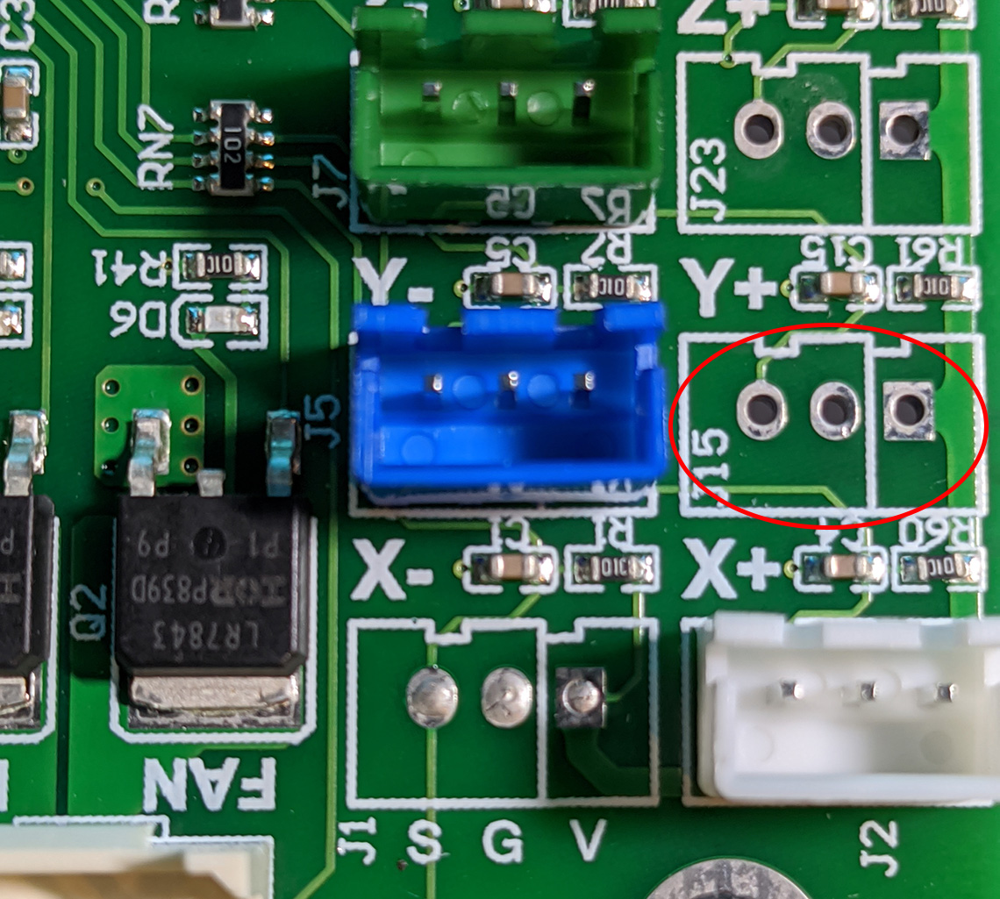
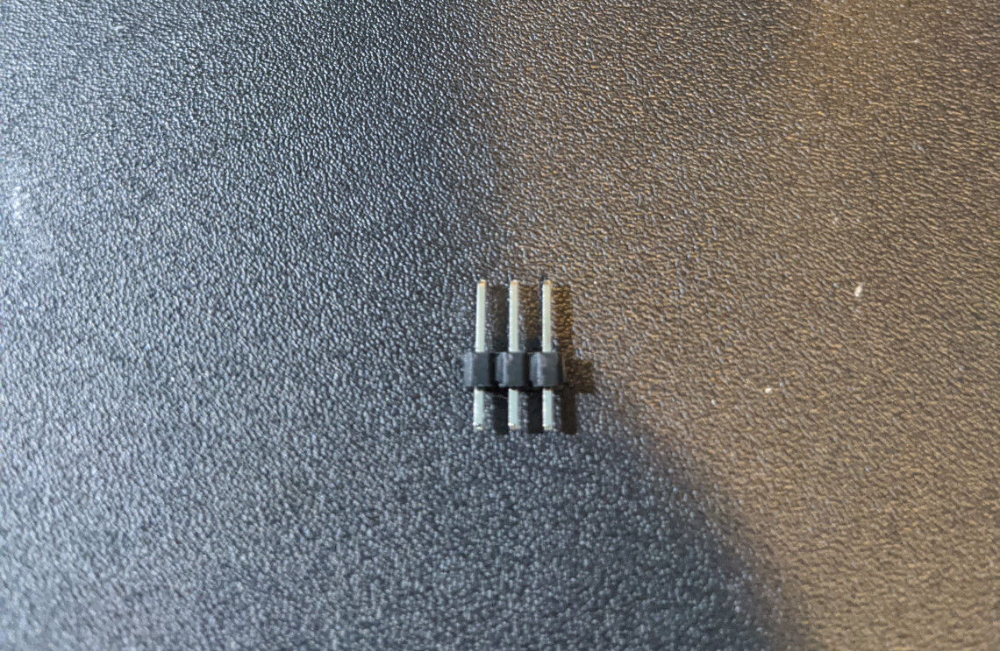
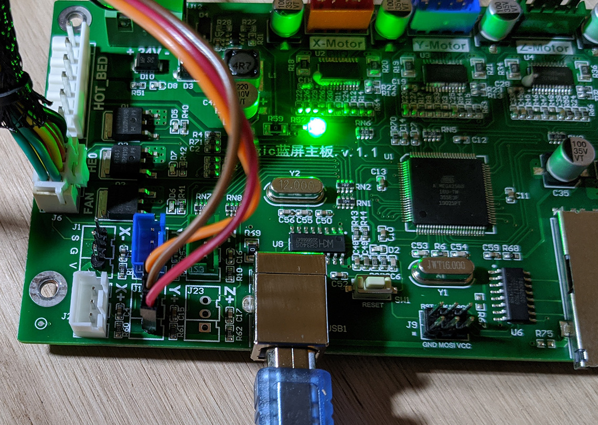
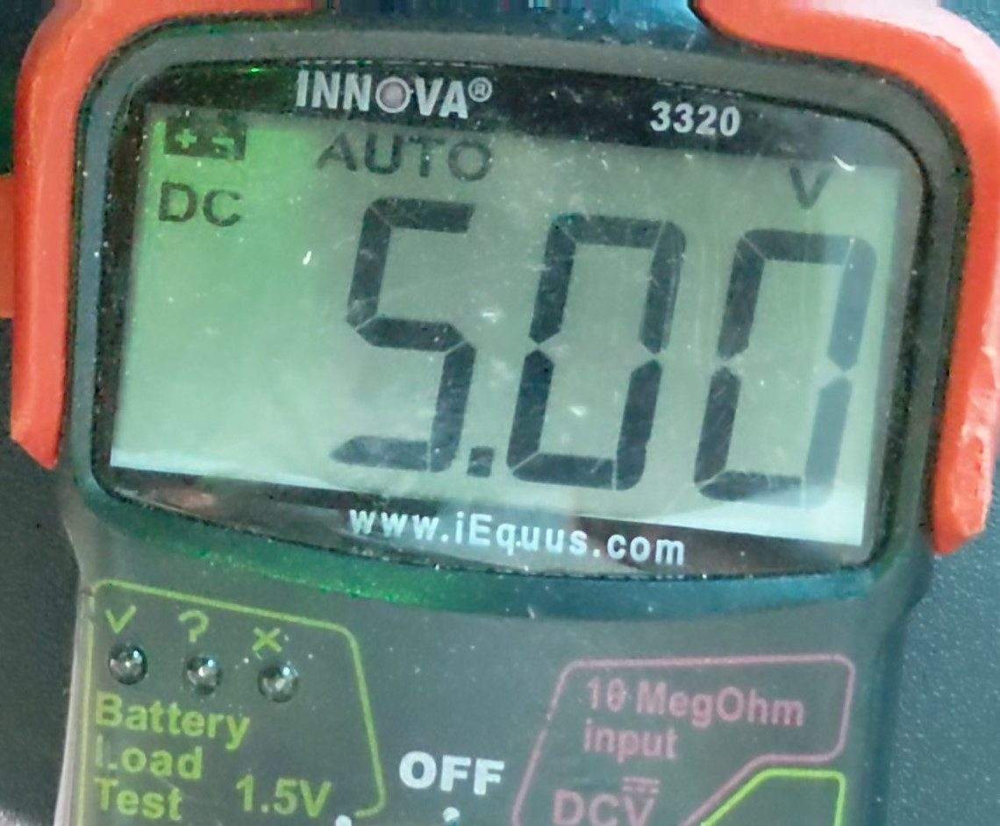
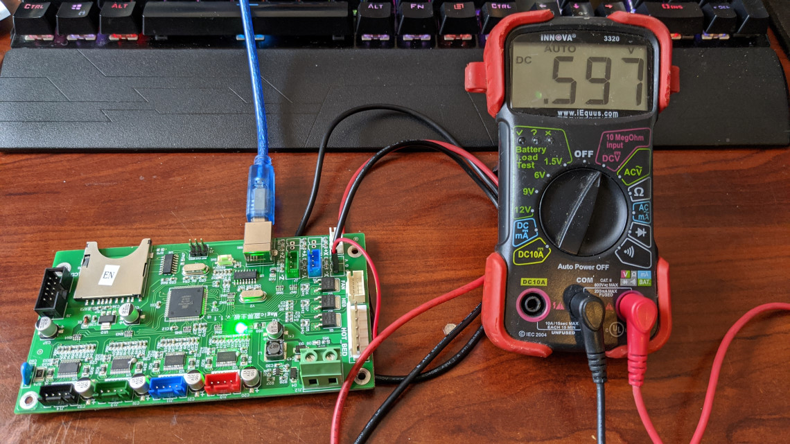
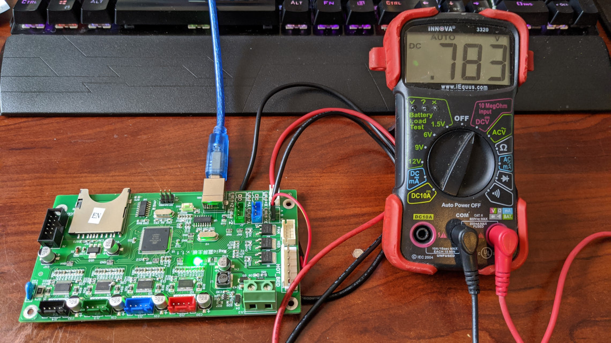

JGMaker Magic board modification for BLTouch
(and clones)
The Story
You've got a JGMaker Magic 3D printer and it works great, but there is only one thing you hate having to do time and time again: level the bed. You look up ways of automating this process, and yes the Marlin firmware supports it, and oh look an awesome automatic probe! You quickly turn off your 3D printer and eagerly flip it over, looking over the board you see all these cables plugged in but what's this? No place to hook up any additional items such as this really awesome automatic bed leveling probe? Bah! You quickly flip the table (╯°□°）╯︵ ┻━┻ .
OK well maybe not the last part about flipping over the table is true, but that is what went through my mind when I first thought about adding a BLTouch to my JGMaker Magic. So I searched, saw one post saying it was impossible to add to the JGMaker Magic, but I won't take impossible for an answer. After doing more research I found what I was looking for, the X, Y, Z pin outs should support PWM and servo control, even better if one of these are not in use you can re-allocate that pin to anything you want! Perfect! Now, with the back story on how I spent a couple of weeks in my free time researching on how to make it work, let's get down to modding!
What you will need:
- New firmware
- A mount for your BLTouch or clone - I created one here
- Soldering iron
- Solder
- Male header pins ($5 on Amazon)
- (optional) Volt meter
- Hex 2.5 driver to remove bolts holding board
- Flat head screw driver
- (optional) anti-static wrist band
- Patience
Legal stuff
I am not responsible in any way, shape or form if you damage your 3D printer!
You are doing this modification at your own risk!
This will void your warrenty with JGMaker, you acknowledge that by continuing you agree to accept the
risk.
Learning from mistakes
I wanted to include this little section at the start because I wanted to highlight something unusual about the board for the JGMaker Magic that I did not know until after I had tested with the board out, the probe worked and then put everything back together and it wasn't working anymore. I originally planned to use the X- connector, but as it turns out there is a reason JGMaker put the X- switch on the X+ location. For some odd reason and it's still not clear to me as to why but the signal pin on X- is hooked up to something in the hotend wire bundle that prevents the X- signal pin from working when the hotend wire bundle is hooked up to the board. Very strange. So in the video at the end of this guide, you'll see it hooked up to the X- pins instead of Y+ and that is why. Don't worry, the firmware has been updated to use Y+ pins we will be using and the probe functions exactly the same.
Removing the board
Turn off your 3D printer and UNPLUG the power cable from the back of the printer. I can't stress this enough, you need to make sure the power cable is completely disconnected from the printer or unplugged from the wall. Once you have done this you will need to tilt the printer backwards so the front of the printer is now up in the air and the underside is exposed.
 JGMaker Magic underside showing board and cables unplugged
Carefully start unplugging the cables from the board, note that the HOT BED and bundle going to the hotend have clips on the cables that you will need to release to be able to unplug them from the board. Use caution not to pull the cables out too hard to avoid damage. You will also notice a black and red wire coming from the power supply to the board, this is why you must make sure to unplug the printer from the outlet. Use your flat head screw driver to loosen the terminal lugs and the wires will slide right out. Make sure not to unscrew the terminal lugs all the way out as just loosening them is enough to free the wires.
Once all the cables are disconnected from the board, you can now unscrew the 4 bolts (2 top, 2 bottom) holding the board to the base of the 3D printer. Avoid directly touching any of the chips on the board and try to only handle the board by the edges to reduce chances of static discharge if you do not have an anti-static wrist band. Take the board to where you will be soldering it.
The hard part: soldering the new connection
 Location of where we will be adding the new header pins for the BLTouch
 Close up of location of where we will be adding the new header pins for the BLTouch
In the pictures above you can see the location we will be adding our header pins to. Prepare your header pins by breaking off a group of 3 pins so you have pins that are like below.
 Header pins
There is no need to seperate each individual header pin as the spacing on the PCB fits the spacing of the header pins. Once you have the header pins in place (short end goes through the PCB) solder them in place from the bottom of the board so that the header pins are soldered to the contact pads on the bottom of the board.
The hard part is done, on to testing!
Now we have an awesome new connection on the board! The hard part is over! As you might have noticed on the PCB below the X- pins location are the letters S, G and V. This is important to note for when hooking up the BLTouch (or clone) to the board. The S stands for Signal and will be used for the signal connection. The G is ground, this is where you want to hook the ground connection to. The V is voltage (VCC), this is what will be used to hook up to the VCC (5V+). Please refer to the documentation for your probe on which colored wire for your device goes to which connection. Just make sure to hook them up following the order printed under the X- space (S G V).
 Probe connected to new header pins connection
This step is optional but is a good way to confirm the header pins have been properly soldered into
place.
On a safe surface such as a wood desk, glass desk, piece of card board let's verify our new connection
is getting voltage and is
grounded properly. We don't need to hook it up to the power supply, we simply need to hook the USB cable
up to the board to supply
enough power for testing. Using your volt meter set it to measure DC volts, I use the battery load test 6V
feature on my volt meter in this case. Place your probes in the correct location on our new
header pins, black to Ground
and Red to the VCC pin. Make sure not to cross these pins or you risk shorting out your board! You should
get 5V reading like below.
 New header pin outputting 5.00 volts
That's it! You're done with the hardware modifications to the board. Bolt your board back onto your 3D printer. Hook everything back up, make sure when hooking your power supply up that the red wire goes in the + terminal and black into the - terminal, which should be Black wire into top terminal and red wire into the bottom terminal. Turn your printer on, verify it's still working, print your BLTouch mount for the JGMaker Magic from here, follow the directions and flash the new firmware located here and you're all set! No more manual bed leveling.
Video Demonstration using BLTouch clone
Download Video: "MP4"
Download Video: "MP4"
Signal pin output
These pictures simply show the signal pin output working correctly when given the M401 and M402 commands on the new firmware.
 M401 command sent and signal pin output
 M402 command sent and signal pin output